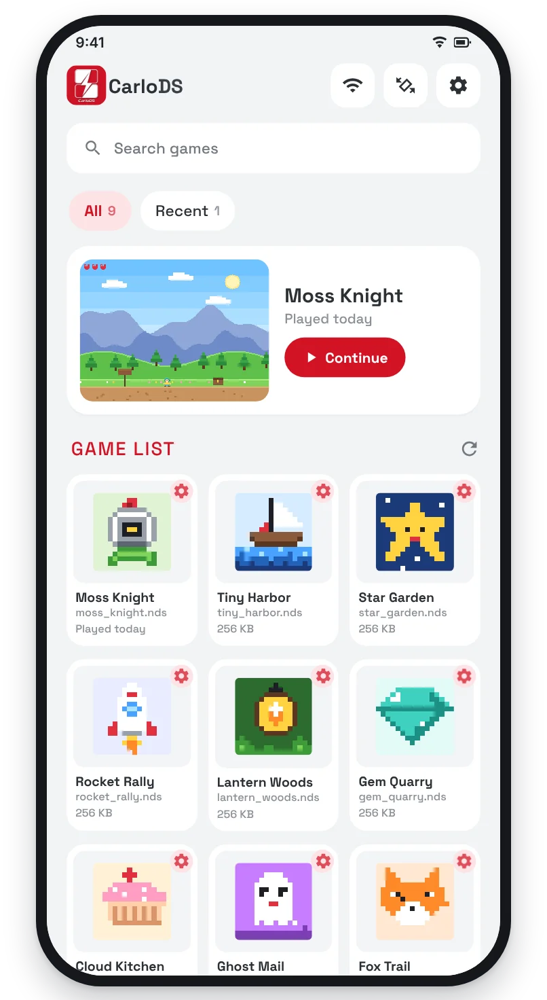

Features
CarloDS is an NDS emulator for Android phones and tablets. Its emulation core, including the ARM9 and ARM7 processors, 2D and 3D graphics, audio, wireless and the built-in BIOS, was built entirely from scratch and calibrated against extensive testing on original hardware. Most games run without BIOS files; ZIP archives are supported.
Custom-built, high-accuracy core
- Calibrated against hardware test resultsCPU timing, DMA, 3D rendering, anti-aliasing, clipping and more
- Two coresThe accurate core, closest to the original hardware, and the fast core, which uses JIT to run most games considerably faster
- Built-in BIOS; your own BIOS and firmware files in the games folder are used automatically

Game library
- Game icons and titles are read automatically; subfolders and ZIP files are supported
- Search, recently played games and a Continue shortcut
- Custom cover art for each game
- An optional performance check on first launch recommends the best settings for your device

Screen layouts and controls
- Portrait, landscape large + small, landscape side by side and landscape single-screen layouts, switchable in one tap, with screen swapping
- Touch input on the lower screen
- Freely selectable screen orientation
- On-screen controls can be hidden for use with a controller
- Lid close and open (most games sleep while the lid is closed)

Graphics and performance
- Low-end, mid-range and high-end presets, plus a device-specific recommended preset after the performance check
- 3D at up to 4× resolution (or automatic), 3D anti-aliasing, texture smoothing and smooth 2D scaling
- RenderersSoftware, OpenGL ES and Vulkan
- FiltersSmoothing, LCD, scanlines, xBR and CAS sharpening, with brightness and contrast controls
- Performance options16-bit output, multithreaded 3D, instant geometry, automatic frame skipping
- Per-game picture, performance and controller settings
- On-screen displayBoot animation, frame rate and detailed performance statistics

Saving and tools
- Multiple save state slots with undo; progress is saved automatically if the game is interrupted
- Fast forward (up to 4×), rewind (5, 10 or 15 seconds per tap) and turbo buttons with adjustable speed
- In-game shortcutsVolume, quick save, screenshot, lid, cheats, memory search and rewind, each configurable
- CheatsAction Replay codes, usrcheat.dat and cheats.xml databases, and .mch, .dct, .cht and text files
- Memory search in a floating window while the game continues to run, with a memory viewer and write logging

Wireless play and download content
- Local wireless play between devices on the same Wi‑Fi network, or via a mobile hotspot where no router is available
- A built-in replacement for the discontinued online service, hosted on your device for devices on the local network (selected games)
- Download content (experimental)In-game gifts and distributions are built in and can be received offline

Additional features
- RetroAchievements support
- Cloud saves synchronised via Google Drive
- Controller and keyboard support with fully remappable buttons
- Microphone input for games that require blowing or speaking; audio is recorded only while a game is running
- GBA slotInsert a GBA game from RetroGenY, our GBA emulator, or a Rumble Pak using the device's vibration
- Console profileNickname, birthday, favourite colour, message and language
- Problem reportingSend diagnostic logs to the developer by email